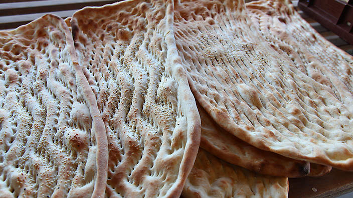
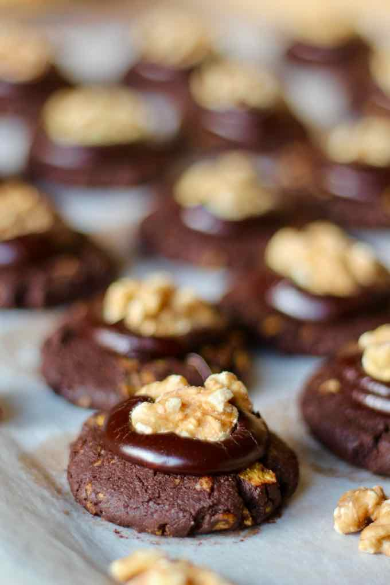
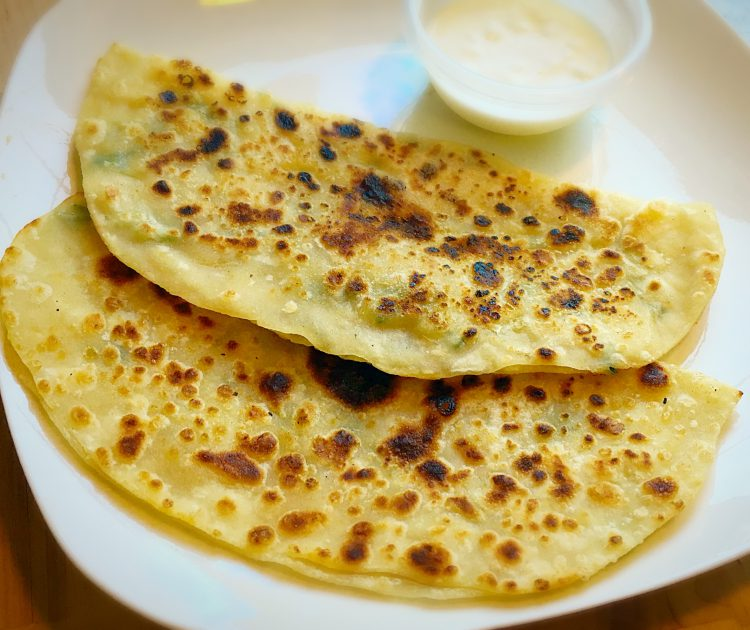
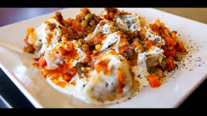
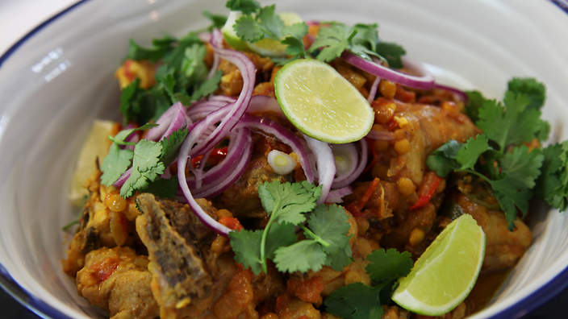
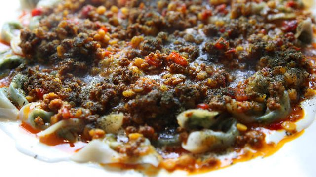
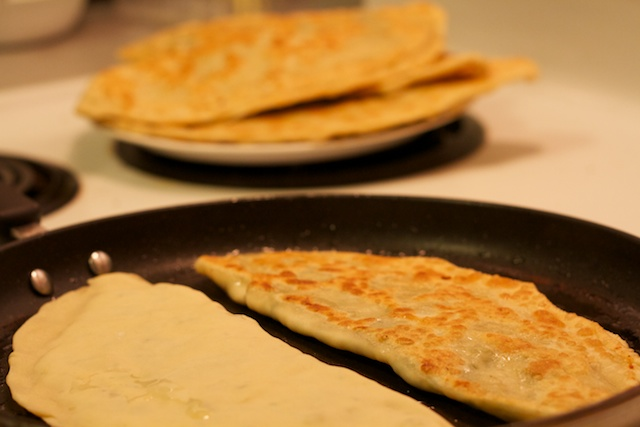

Bread
Afghanistan Bread is so tasty bread.

Afghan Biscuit
The Afghan biscuit is one of the most traditional pastries in New Zealand. It is made with flour, butter, cornflakes, sugar and pure cocoa powder. It is topped with chocolate icing and a walnut kernel pressed over the icing.

Cream Rols
Afghan cuisine, traditional cream roll filled with both butter or whipped cream. one of the most popular dessert in afghanistan.

Bolani
this Afghanistani bread is prepared either by baking or frying and has a vegetable stuffing made of different types of ingredients like potatoes, pumpkin, chives, lentils, and leeks.

Manto
Manto’ or ‘Manti’, these are dumplings made from minced or ground meat and is a common street food. Because it is steamed, the cooking process is easier. This gluten-free dish is healthy, and with a less oil content that makes it easier to digest.

Qorma
Afghan Korma is a wonderfully spicy dish, and a national favorite in this country. It is made with delicious spices, creamy Greek yogurt, and chana dal. The chana dal makes Afghan Korma especially satisfying and filling.

Aushak
it is a common menu for public holidays and Islamic festive gatherings like Eid and Ramadan. This dish is made of pasta dumplings stuffed with scallion. It is usually served with a meaty tomato sauce. The meal is often enjoyed with yogurt and dry mint garnishes. However, a vegetarian variety is also available.

Bolani
this Afghanistani bread is prepared either by baking or frying and has a vegetable stuffing made of different types of ingredients like potatoes, pumpkin, chives, lentils, and leeks.